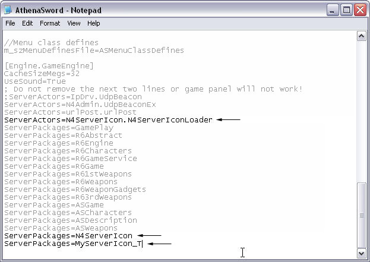
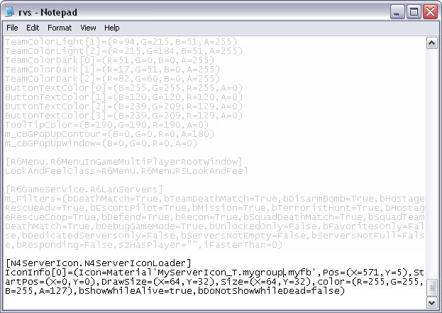

You've finished creating your logo and we're on to Step 2.
Before proceeding please shutdown your server so that our changes will not be reverted when the server is shutdown.
First, upload the N4ServerIcon.utx file from the download to the Textures directory of your server.
Second, also upload the MyServerIcon_T.utx file that you created to the Textures directory of your server. (or whatever filename you have created)
Now open up RavenShield.mod or AthenaSword.mod in your servers' Mods folder (whichever mod your server is running)
Then add this line to the .mod file in with all the other server packages
- ServerPackages=N4ServerIcon
Next add your own texture package. In our example it was MyServerIcon_T, so we would add the following
- ServerPackages=MyServerIcon_T
While you are still in your .mod file, you need to add a ServerActor as well. Add the following line.
- ServerActors=N4ServerIcon.N4ServerIconLoader
Example

When you have finished, save the .mod file and re-upload it to your server if necessary.
Now you need to open up the appropriate ravenshield.ini file which is usually in your ravenshield\system directory.
At the bottom of the file, add the following. (Just select all the text in the box and copy and paste it to your INI file)
Note: Each IconInfo must be on a different line. For example, if you want to have seperate Icons you need to do something like the following:
Example

Save the file and re-upload it to your server if necessary.
VERY IMPORTANT:
Clients should not download your texture package or N4ServerIcon manually. They and people who are testing them on their client machines should delete the files off their computer before going onto any public servers otherwise you may get a package mismatch if they are running a different version. There will be no problems if you join multiple servers running different versions this way.
There are many options you can set for how Ravenshield displays the icon, however showing you all the options and variables would be a lengthy process. We've given you the basic foundation to get the server icon up and running, so feel free to play around with the variables - at your own risk. Here is a tidbit from Neo's readme in regards to the additional variables.
| There are more options, here is a full list of hte options:
var() config N4Point Pos;
var() config N4Point StartPos;
var() config N4Point DrawSize;
var() config N4Point Size;
var() config color color;
var() config float RotationAngle;
var() config bool bShowWhileAlive;
var() config bool bDoNotShowWhileDead;
var() config float StartUpTime;
var() config float FadeInTime;
var() config float FadeOutTime;
And how to use them:
icon this is the icon it can be of any material class, example:
Icon=Material'MyServerIcon_T.mygroup.myfb'
Pos this is the x,y position on the screen (relative to the resolution 640x480), example:
Pos=(X=576,Y=0)
StartPos is the position in the material to start drawing from. This should generally be left to 0
StartPos=(X=0.0,Y=0.0)
Size is the size of the texture (if you make this less than in fact the real size you are in effect clipping the texture...this can be useful to select sections of a texture, if you use startpos as well), example:
Size=(X=64,Y=32)
color is the color of the texture, it is broken up into four components RGBA, red, green, blue, alpha all range from 0-255 so to have a half transparent texture you would select A=127, generally you would make R=255,G=255,B=255 to make
sure all colors are drawn in the texture, example:
Color=(R=255,G=255,B=255,A=127)
RotationAngle rotates the texture by a specific angle, this should generally be left to 0, example:
RotationAngle=0.0
bShowWhileAlive determines if the texture will be shown while the player is alive, set to true if you want it to be or false if you don’t, example:
bShowWhileAlive=true
bDoNotShowWhileDead determins if the texture will NOT be shown while dead, example:
bDoNotShowWhileDead=false
StartUpTime determines when the texture will begin to fadein, it is often useful to set this to the same value as the fadeouttime
of another texture to get a smooth transition, eg:
StartUpTime=2.0
FadeInTime is the time from when the texture begins to show until it reachs its desired alpha value, eg:
FadeInTime=2.0
FadeOutTime is the time it takes for the texture to disappear (reach an alpha value of 0), eg:
FadeOutTime=2.0
if you do not edit any values they will go to their defaults for N4Point objects that is (X=0.0,Y=0.0), for color (or colour) it is
R=255,B=255,G=255,A=127, for all bool properties the default is false and for all float properties the default is 0.0
FINALLY:
You can have up to 4 icons per icon loader, if you want more there is a way to do it (see the advanced section). Each icon is indexed from 0-3 so
IconInfo[0]=...
IconInfo[1]=...
IconInfo[2]=...
IconInfo[3]=...
ANOTHER EXAMPLE:
This example takes a texture of size 64x32 and shows it at full size when you are dead and half size while you are alive, the two icons fade in and out smoothly during the transitions
(both are shown in the top right hand corner of the screen):
[N4ServerIcon.N4ServerIconLoader]
IconInfo[0]=(StartUpTime=2.0,FadeInTime=2.0,FadeOutTime=2.0,Icon=Material'MyServerIcon_T.mygroup.myfb',
Pos=(X=576,Y=0),StartPos=(X=0,Y=0),DrawSize=(X=64,Y=32),Size=(X=64,Y=32),color=(R=255,G=255,B=255,A=127)
,bShowWhileAlive=true,bDoNotShowWhileDead=false)
IconInfo[0]=(StartUpTime=2.0,FadeInTime=2.0,FadeOutTime=2.0,Icon=Material'MyServerIcon_T.mygroup.myfb',
Pos=(X=512,Y=0),StartPos=(X=0,Y=0),DrawSize=(X=128,Y=64),Size=(X=64,Y=32),color=(R=255,G=255,B=255,A=127)
,bShowWhileAlive=true,bDoNotShowWhileDead=false)
ADVANCED:
if you really must have more than 4 server icons you can add as many N4ServerIcon.N4ServerMultiIconLoader serveractors as you like, then the config is the same except it must be under:
[N4ServerMultiIconLoader0]
then
[N4ServerMultiIconLoader1]
etc etc etc |
Troubleshooting:
Q. I get package mismatch when I join a server, why?
A.
Delete N4ServerIcon.utx from your texture directory on your client machine, it is not needed and can block newer/older versions of the program from downloading when you join the server.
Q. I am having problems, I cannot be bothered reading this document properly although I will tell you I read right through it, what do I do?
A.
You do not email me, you re-read this document and if you still cannot figure it out you go on the forums and ask your question and hope someone will help you out. Then once you have found this out you make your own “easier” tutorial to show to other people.
Q. Are you sure you want me to put this in the Textures directory and not the System directory?
A.
Yes I am 100% sure.
|